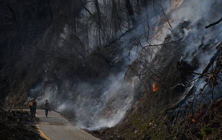
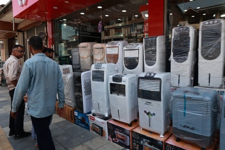
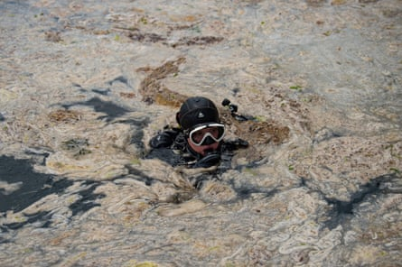

T he threat of nuclear war, genocide in Gaza, ChatGPT reducing human cognitive ability, another summer of record heat. Every day brings a torrent of unimaginable horror . It used to be weeks between disasters, now we’re lucky to get hours.
For many, the only sane solution is to stop reading the news altogether – advice often shared by therapists, self-help books and even newspaper articles .
But to bury your head in the sand until the day the apocalypse arrives at your doorstep is not necessarily the most tranquil, nor moral, of postures. In the sprawling Reddit community r/collapse , people instead try to stare unblinkingly at the unravelling of civilization. For the roughly half a million members here, many of whom joined in the wake of Covid-19 pandemic and two Donald Trump inaugurations, the arc of history feels more like a freefall.
This June, r/collapse was busy discussing the developing conflict between Iran and Israel, as well as “wet bulbs” (a far more humid and deadly type of heatwave), the millions of air conditioners being bought in India as temperatures rise and Trump’s plan to end Fema .
But one of the top posts tackled a more specialist topic: declining levels of phytoplankton in the North Atlantic. “As if the North Atlantic fisheries wasn’t in bad enough shape from overfishing of cod, now the base of the entire food chain has observed to be getting smaller each year for the past 60 years,” the poster wrote. A commenter added: “Ocean acidification/die off is terrifying. Even if we solve all the other collapse problems (and we almost certainly can’t) the oceans dying means the atmosphere becomes depleted of oxygen and poisonous. If humans survive those scenarios, life on Earth would more resemble that of a moon colony.” Much informed panicking ensued.
There are lots of places on the internet, and especially on Reddit , that collate news stories around a theme: r/UpliftingNews, r/LateStageCapitalism and r/nottheonion (which posts news so ridiculous it seems like satire) to name a few. But r/collapse is much more than a collation of links for people to feel outraged and nihilistic or warm and fuzzy about. What’s striking is the clear-eyed, unemotional tone in which posts are written: neither pessimistic nor hopeful, just peering through the window at a relentless decline.
“We are not an activist subreddit,” one moderator, a retired history teacher, told me. “We filter out people who want to organize and protest. We are also not inclined towards accelerationism , we’re not seeking doom. We accept that perhaps it’s going to happen, but it’s not a conspiratorial subreddit. It’s basically logic, rational and scientific.”
Firefighters work to put out wildfire in Tryon, North Carolina, on 3 March 2025.Photograph: Anadolu/Getty Images
That is thanks in part to r/collapse’s 30 fairly active moderators – among them neuroscientists, environmental scientists, chemical engineers, government auditors and history teachers – who intensively maintain the subreddit as relatively objective a resource as possible. They even have a separate page, called r/collapse_wilds, for posts removed by the moderation team, usually because they did not provide high quality enough evidence. When a new moderator applies, the existing group screens them for mental health issues and ability to handle consistently distressing content, as well as overt political bias.
It might sound like a lot of red tape to help run a subreddit, but when you realize what it takes to drench yourself in fatalistic topics day in, day out, you start to understand that a collapse moderator is a special kind of person.
I spoke with 10 such moderators on a video chat, just as the national guard and marines were sent to quell Ice protests in Los Angeles. All are men based in North America, polite and turn-taking, though most insisted on remaining anonymous so their online roles wouldn’t interfere with their real world positions. In their roles, they take the existential questions of civilization collapse seriously: What exactly constitutes collapse? Are we already experiencing it? Why aren’t people reacting more strongly to its likelihood, and does either humanity or technology have the ability to prevent it? Practical questions, too: where is the best place to live, the most helpful job to have, as collapse happens?
They wrestle with whether too much Trump news is distracting, and painstakingly debate posts about the morality of having children and population growth, which they say is the most controversial topic among the community. Each post from a user must come with an accompanying statement explaining why it’s related to collapse that the moderators assess; sometimes it seems more like they’re overseeing a grant application process rather than an online forum.
The work is often philosophical in nature. “People say that this is one of the least religious times in human history, but I think that’s completely false,” said Etienne, a moderator who is based in Ontario with a background in cognitive science and neuroscience. “Most of us have strong, strong faith in the myth of technological progress. Most people associate thinking about collapse with pessimism because you’re questioning the orthodoxy of our modern religion, which is faith in progress. And I think once you’ve made peace with the myth that we all grew up with being scientifically false, then you go through the stages of grief, then you build some psychological resilience to live in the world.”
The group says that when the media or academia write about collapse issues, they often try to end on an optimistic note, so as not to depress the reader.
“It’s really hard to find a mainstream publication that doesn’t end an article about, say, renewable energy, with a section that says: ‘things are difficult but let’s have hope’ and ‘it’s just a matter of building more solar panels,’” Etienne said. He cited reports, including an impactful study by Simon Michaux commissioned by the Finnish government, that say it’s simply impossible to replace energy with renewable sources at scale. “But we find there’s much less coverage of that – of using less energy and degrowth.”
People shop for air coolers amid hot weather conditions in Srinagar, Jammu and Kashmir, India, on 20 June 2025.Photograph: Nasir Kachroo/NurPhoto/Shutterstock
The moderators also say that people who are concerned about societal collapse tend to think it’ll come suddenly with a nuclear bomb or terrible pandemic. The subreddit is of a different mind. One moderator, an engineer who preferred to remain anonymous, explained the tenets of r/collapse like this: “In the long term, it’s going to be very difficult for us to maintain this very complex industrial society. We’re looking at a type of simplification of industrial civilization. I think most of our members think this is what collapse is, which is why almost half of the members, when asked when they think collapse is going to happen, said that it’s already happening.
“This is the idea of catabolic collapse: that what we’re living through is a series of crises, sometimes followed by momentary resolution, but the long-term trend is downturn. It’s not going to be a sudden event that’s everything in a single day, which I think people like preppers are more accustomed to thinking.”
E very week, r/collapse puts out a special newsletter called Last Week in Collapse, a one-stop shop for everything that has gone wrong in the world. Its author is an international affairs researcher, who requested anonymity because their background might “color the reader’s interpretation of the events”. They’re not part of the moderation group, but began writing the roundup in 2021, inspired by what they had seen on the subreddit.
“It was part of a process of making sense of the storm of news around us – almost a form of writing therapy,” they told me over email. “It is so easy to get lost or distracted by the next thing that we forget the big picture. So I decided to start organizing and summarizing other stories because I believed it would help other collapsologists and observers zoom out and take it all in.”
It makes for a pretty brutal read. This week’s newsletter , for example, began with a newly published study of tree rings that suggested “irreversible large-scale forest loss” in the Amazon; featured a study saying climate change could reduce crop yields across the US and Europe 40% by 2100, which one scientist likened to “everyone on the planet giving up breakfast”; touched on counterintuitive research showing that some glass bottles contain up to 50 times more microplastics than plastic bottles or metal cans; and reported that this is “the sixth consecutive year that global peacefulness has deteriorated” per the Global Peace Index . These were just a few of around a hundred links.
“Collapse is hard to deny when it’s all laid out for you every week,” says the author. Readers are now able to spend just five or 10 minutes reading one email “and be kept abreast on all the latest doom”.
I ask what differentiates just bad news from a news story that is actually about collapse. “I have found that it helps to imagine likely realities for humanity, position your perspective in the future, and then look backwards for the telltale signs and milestones of future collapse,” the author says. “What factors and events will seem obvious to someone living 50 or 100 years from now? We can look back at the 1930s today and the road to WWII seems much clearer. Scientists are publishing under-appreciated studies every day, and their relevance is fairly obvious. Yet our attention lies elsewhere entirely.”
A weekly roundup does seem like a useful alternative to completely ignoring society’s downfall. But if things are as bad as r/collapse believes them to be, does it do us any good to inundate ourselves with news of the end of everything? Aren’t we just increasing our personal suffering without making anything better?
“Yes, I sometimes wonder about the overall mental impact of Last Week in Collapse,” says its author. “I know some people find it to be valuable, informative and even soothing. Others can’t bring themselves to read it. It’s not for everyone, and that’s fine. To paraphrase Trotsky: you may not be interested in collapse, but collapse is interested in you.”
A diver swims in the Marmara Sea near Turkey, to inspect mucilage, a layer of slime that develops on the surface of the water due to the proliferation of phytoplankton, gravely threatening the marine biome, on 8 June 2021.Photograph: Yasin Akgül/AFP/Getty Images
To that end, the subreddit provides online mental health resources as well as a separate community, r/CollapseSupport , where people talk about their struggles. “Can’t stop thinking about the children”, “feeling completely hopeless” and “scared to death for everyone” are three recent post titles.
Most of the moderators say that the thing they’ve found most helpful in dealing with the onslaught of information is moderating itself, and connecting with people who have similar concerns across the world: debating but also sharing cat photos and having meaningful discussion about how to lead a meaningful life in the end times. But they’re aware they’re not always the most fun people at a party.
“I don’t want to be right about this sort of situation,” said one of the moderators, an electrical engineer from the midwest. “But if you’re open-minded and you’re considerate of sources, and you’re approaching it from a very methodical fashion, there is much cause for concern. Working through that grief was trying. I think there’s a lot of people that come to this community that maybe had my same perspective, and if I can at least help a few of those folks work through that, or come to their own peace, that adds some small iota of value to the internet space at large.”
And that would be a vaguely uplifting note to end this article on, but as I’m hearing, that’s the coward’s way out. The truth is not all the people behind r/collapse feel like they’re necessarily helping.
As the author of Last Week in Collapse put it to me, there’s probably no way out of the collapse: “I do not believe we will ultimately innovate or vote ourselves out of our situation. I predict humanity is in for a polluted future of climate emergencies, famines, wars and scarcity before the end of this century. And heatwaves, civil conflicts, breakdown of ocean currents, disease, poverty, overpopulation, drought and more. So I feel a certain sense of duty to inform those who are interested, but it’s probably healthier to ‘chop wood, carry water’ than to spend too much time following the world’s problems. Most people can’t really stop the machine anyway.”